Ejercicios interactivos de ecuación de la recta I
Elige la opción correcta en cada caso:
1Calcula la ecuación vectorial de la recta r que pasa por el punto (3, −1) y tiene por vector director 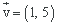

2Calcula la ecuación paramétrica de la recta r que pasa por el punto (6, 2) y tiene por vector director 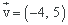
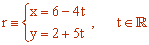
3Calcula la ecuación continua de la recta r que pasa por el punto (1, −4) y tiene por vector de dirección 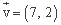
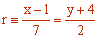
4Calcula la ecuación general de la recta r que pasa por el punto (6, 4) y tiene como vector director 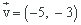
La ecuación general de una recta es de la forma Ax + By + C = 0.
El vector director de la recta viene dado por 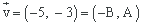.
De aquí se tiene A = −3, B = 5.
Entonces la ecuación queda:
−3x + 5y + C = 0
Sabemos que la recta pasa por el punto (6, 4), así que podemos sustituir las coordenadas del punto en la recta y obtenemos el valor de C:
−3·6 + 5·4 + C = 0 ⇒ C = −2
Luego la ecuación pedida es
r ≡ −3x + 5y − 2 = 0
5Calcula la ecuación de la recta r que pasa por los puntos (3, −2) y (4, 5)

6Calcula la ecuación punto-pendiente de la recta r que pasa por el punto (1, −1) y tiene como vector director 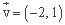
Para calcular esta ecuación de la recta, necesitamos la pendiente de la misma. Podemos hallar la pendiente de la recta a partir del vector director:
Si 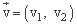, entonces 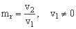.
Así que la pendiente de la recta que queremos calcular es 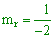.
La ecuación punto-pendiente es
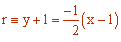
7Calcula la ecuación explícita de la recta r que pasa por el punto (−3, 2) y tiene como vector director 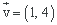
Para calcular esta ecuación de la recta, necesitamos la pendiente de la misma. Podemos hallar la pendiente de la recta r a partir del vector director:
Si , entonces .
Así que la pendiente de la recta que queremos calcular es 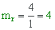.
La ecuación explícita de la recta es de la forma y = mx + b. Como la pendiente es 4, y = 4x + b.
Sabemos que la recta pasa por el punto (−3, 2), así que sustituyendo las coordenadas del punto en la ecuación podemos hallar el término independiente b.
−3 = 4·2 + b ⇒ b = −11
Luego la ecuación pedida es
r ≡ y = 4x − 11
8Calcula la ecuación canónica o segmentaria de la recta r que pasa por el punto (2, −2) y tiene como vector director 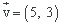
Las ecuación continua de la recta es
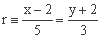
de aquí obtenemos la ecuación general
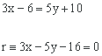
Pasamos el término independiente al otro lado de la igualdad:
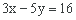
Dividimos ambos términos de la igualdad por el término independiente para que el término independiente sea 1.

Operando tenemos la ecuación pedida:
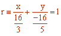
Si tienes dudas puedes consultar la teoría